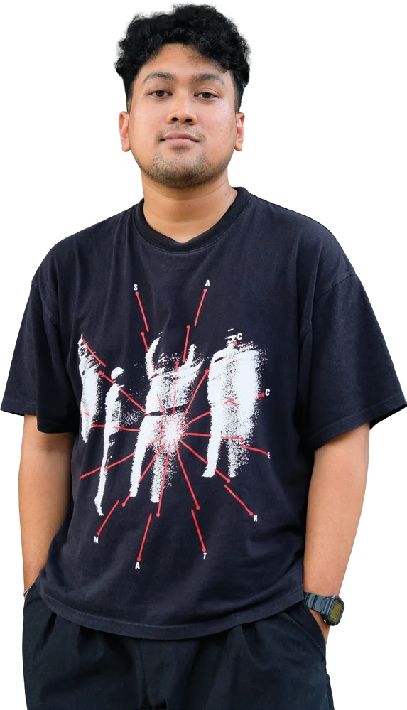

Kelas MOTE · Ruang belajar
Ada satu skill yang kamu gak sadar kamu punya.

Ryan AdnuCreative Director MOTE Kreatif
0:00 / 0:00

Ryan AdnuCreative Director MOTE Kreatif
Potongan dari kelasnya. Kelas lengkapnya kebuka setelah kamu ambil kelasnya.
Yang kalo kamu sadari dan kamu kuasai, kamu bisa jadi di atas rata-rata di lingkunganmu.
GratisKelas ini rekaman Kelas MOTE, sesi belajar rutin tim MOTE Kreatif di The HOP Space, Garut, Oktober 2026. Rekamannya kami biarkan apa adanya, termasuk obrolan dan tanya-jawab di kelas.
Klik Ambil kelas, isi nama, email, nomor WhatsApp, dan kotamu di halaman checkout. Totalnya Rp 0. Setelah itu kelasnya masuk Kelasku, dan video lengkap langsung bisa ditonton.
Ada yang masih inget cerita Kung Fu Panda? Po itu gendut, nggak bisa kung fu, diketawain. Ternyata kekuatannya udah nempel di badannya dari awal. Dia cuma belum sadar.
Kita juga gitu. Tiap hari brief masuk, kita kerjain. Naskah masuk, kita take. Rajin, tapi baru mikir kalau ada yang nyuruh. Padahal ada tiga kemampuan yang udah kita pakai dari kecil, waktu nyeritain film ke temen, ngatur liburan bareng, atau war tiket konser. Kita cuma nggak sadar kalau itu bisa dibawa ke kerjaan.
Di kelas ini Ryan Adnu ngebongkar tiga-tiganya di depan tim MOTE. Tiap kemampuan ada contoh sehari-harinya, terus dibawa ke kerjaan beneran: klien yang minta konten viral, media sosial yang ternyata satu sistem, sampai cara naikin omzet tanpa nambah pembeli.